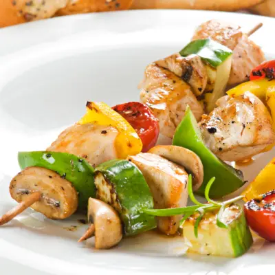

Gomitas sin azúcar
Ingredientes
- Ingrediente 1
- Ingrediente 2
- Ingrediente 3
Preparación
- Paso 1: Describe el primer paso de la receta.
- Paso 2: Describe el segundo paso de la receta.
- Paso 3: Describe el tercer paso de la receta.
Información Nutricional
Calorías: 200 kcal | Proteínas: 10g | Grasas: 5g | Carbohidratos: 30g